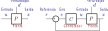
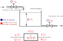

Função de transferência
Malha aberta X Malha fechada
Desempenho
- Acompanhamento do sinal de referência. \(x \rightarrow r \therefore e \rightarrow 0\)
- Rejeição de perturbação
- Tolerância aos erros de modelagem
Aplicação do controlador

Aplicação do controlador

Aplicação do controlador

Reservatório
Reservatório
\(V(t + \Delta t) - V(t) = \Delta t \, q_i - \Delta t q_o\)
\[ \lim_{\Delta t \to 0} \frac{V(t + \Delta t) - V(t)}{\Delta t} = \lim_{\Delta t \to 0} \left( q_i - q_o \right)\]
\( \frac{dV}{dt} = q_i - q_o \)
Supondo área transversal constante ao longo da altura e modelo de válvula de saída: \(q_o = C \, h\)
\( A \frac{dh}{dt} = q_i - C \, h \)
\( A \frac{dh}{dt} + C \, h = q_i \)
\( \mathscr{L} \left[ A \frac{dh}{dt} + C \, h \right] = \mathscr{L} \left[ q_i \right] \rightarrow \left( A \, s + C \right) H(s) = Q_i(s) \)
\(G(s) = \frac{H(s)}{Q_i(s)} = \frac{1}{A \, s + C} \)
Estabilidade absoluta
\(G(s) = \frac{a_m s^m + a_{m-1} s^{m-1} + \, \cdots \, + a_1 s + 1}{(s+p_1)(s+p_2) \, \cdots \, (s+p_n)} \)

Se todos os polos \(s_k = -p_k\) do sistema estiverem no semi plano esquerdo (SPE), a função de transferência \(G(s)\) é estável.
Estabilidade absoluta
\(G(s) = \frac{a_m s^m + a_{m-1} s^{m-1} + \, \cdots \, + a_1 s + 1}{(s+p_1)(s+p_2) \, \cdots \, (s+p_n)} \)
Qual é a resposta no tempo para uma entrada U(s) = 1?
\(G(s) = \frac{Y(s)}{U(s)} \rightarrow Y(s) = G(s) U(s)\)
\(Y(s) = G(s) = \frac{r_1}{s + p_1} + \frac{r_2}{s + p_2} + \cdots + \frac{r_n}{s + p_n}\)
\( \mathscr{L}^{-1} \left[ Y(s) \right] = \mathscr{L}^{-1} \left[ \frac{r_1}{s + p_1} + \frac{r_2}{s + p_2} + \cdots + \frac{r_n}{s + p_n} \right]\)
\(y(t) = r_1 {\rm e}^{-p_1 \, t} + r_2 {\rm e}^{-p_2 \, t} + \cdots + r_n {\rm e}^{-p_n \, t} \)
Basta que um polo \(s_k = - p_k\) tenha parte real positiva para que o sistema seja instável.
Ganho da função de transferência
\(G(s) = \frac{p_m s^m + p_{m-1} s^{m-1} + \, \cdots \, + p_1 s + p_0}{q_n s^n + q_{n-1} s^{n-1} + \, \cdots \, + q_1 s + q_0}\)
Primeira forma normal
\(G(s) = \color{red}{\frac{p_m}{q_n}} \frac{1 \, s^m + \frac{p_{m-1}}{p_m} s^{m-1} + \, \cdots \, + \frac{p_1}{p_m} s + \frac{p_0}{p_m}}{1 \, s^n + \frac{q_{n-1}}{q_n} s^{n-1} + \, \cdots \, + \frac{q_1}{q_n} s + \frac{q_0}{q_n}}\)
Segunda forma normal
\(G(s) = \color{red}{\frac{p_0}{q_0}} \frac{\frac{p_m}{p_0} s^m + \frac{p_{m-1}}{p_0} s^{m-1} + \, \cdots \, + \frac{p_1}{p_0} s + 1}{\frac{q_m}{q_0} s^n + \frac{q_{n-1}}{q_0} s^{n-1} + \, \cdots \, + \frac{q_1}{q_0} s + 1}\)
\(K = \color{red}{\frac{p_m}{q_n}}\) é a constante de ganho.
\(K_g = \color{red}{\frac{p_0}{q_0}}\) é a constante de ganho de frequência zero (\(s = 0\)).
Verifique a estabilidade das funções de transferência:
- \(G(s) = \frac{(s - 3)}{(s + 1)(s+2)}\)
- \(G(s) = \frac{1}{(s+1)(s^2 + 4 s + 13)}\)
- \(G(s) = \frac{1}{(s-1)}\)
Determine os ganhos \(K\) e \(K_g\) da função de transferência #2.